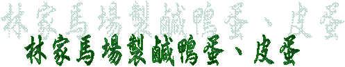

|
|
|
 (一)位居彰化市西北，有著沿海平原地形的線西，是一個農漁兼具的鄉村，早期因養鴨業興盛，便流傳著「台灣的鴨蛋王國」的美名。因此，較長的一輩，說起線西當時的盛況，都擁有一份難以割捨的懷念。當中最為鄉民所熟知的，應屬林家馬場的皮蛋與鹹蛋了。
(二)鹹蛋的製作方法較為簡單，其材料也是唾手可得。首先將紅土與鹽，以三比一的比例加熱水調製為紅泥，然後把紅泥平均的塗在鴨蛋表面，保存於陰涼處，放置十五天左右，去掉紅土，蒸、煮或煎過後即可食用。相形之下，皮蛋的製作則大異其趣：把鴨蛋浸泡在所謂的「浸漬液」中，看似簡單，可是其中所須的配方則要複雜得多，最主要的有氫氧化鈉、氯化鈉鹼、茶沬及其他微量元素等等。
(三)鹹蛋的製作方法有兩種，一是將蛋浸漬在鹽水中，所需時間較短，口感較差，且品質較不穩定；另一是上文介紹的古老法，製程時間雖長，無論用煎、煮、煎過，甚至做成蛋黃酥，口味獨特，並且久藏會出油。
(四)林家馬場創於一九八八年，做皮蛋、鹹蛋的時間約七、八年，由於紅土所造成環保問題，如今馬場已不生產皮蛋，專心於馬場經營，只做技術配方的指導。在921地震過後，一群年青志工為促進地方經濟繁榮，共同推動「線西鄉一日遊」的活動，結合林家馬場解說皮蛋、鹹蛋的製作過程以及鹹蛋ＤＩＹ等內容，多家觀光業者，在假日時常帶團隊，把馬場擠得水洩不通，為線西鄉注入更多的活力。
(五)負責人：林進行 地址：線西鄉線西村中央路二段896巷113號 電話：04-7580930 (摘選自“彰化縣全球資訊服務網“)
(一)鄉長黃漢鉛平日用心鄉政建設、鄉務推動，平日照顧工、商、農、林、漁等不遺餘力，此次為響應政府推動休閒漁業暨加強本鄉觀光漁業發展，喚起民眾關心、認知鄉土文化，特別指示秘書黃弘耀於九十一年十二月十五日星期日上午九時至十二時於塭仔漁港舉辦『二○○二塭仔港烏魚觀光文化節活動』。
(二)當天活動內容有：瞭解烏魚生態、烏魚大促銷、烏魚魚鮮品嚐、農魚特產園遊展售、漁具使用整修示範、民俗風情表演（土風舞、太極拳、幼童國術表演）並聘請十多名廚師準備三千碗「烏魚米粉湯」美食免費招待遊客，吸引超過五千人次的民眾參與，三十分鐘內即一掃而空，由於節目豐富新鮮深獲遊客、鄉親好評，相信此次的活動定能為本鄉塭仔港日後帶來更豐碩的商機，也相信線西的美好未來將指日可待。 (摘選自“第十三期線西鄉訊季刊“) |